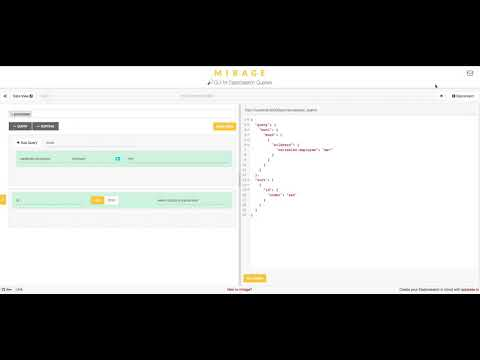

Elasticsearch empowers jBPM
As a follow up on article that introduced NoSQL experimental support for jBPM, this article aims at illustrating one potential integration to enhance search capabilities and potentially routing support for larger environments.
Elasticseach will be used as additional data store where both process instances and tasks will end up being indexed. Please keep in mind that at this point in time it is rather basic integration though has already proven to be extremely valuable. Before jumping into details let’s look at what use cases this integration brings:
- ability to collect process instances and tasks from different sources – e.g. different execution servers connected to different dbs
- ability to search for process instances and tasks using full text search – indexed values etc
- ability to search for process instances and tasks by their variables, multiple variables (both name and value) in single request
- ability to retrieve variables with search results in single request
- and all other things that Elasticsearch provides :)
Implementation
The actual implementation to integrate Elasticsearch with jBPM based on PersistenceEventManager hooks is actually simple – it consists of single class that implements EventEmitter interface – ElasticSearchEventEmitter
It utilises Elasticseach REST API – to be precise its _bulk REST endpoint. It does push all events in single HTTP call. This consists of both types of instances
- ProcessInstanceView
- TaskInstanceView
all views are serialised as JSON documents. This integration uses:
- http://localhost:9200 as the location where Elasticsearch server is
- jbpm as the name of the index
- processes as the type for ProcessInstanceView documents
- tasks as the type for TaskInstanceView documents
Location of the Elasticsearch server and name of the index is configurable via system properties:
- org.jbpm.integration.elasticsearch.url
- org.jbpm.integration.elasticsearch.index
There is one more file in the project and this is the ServiceLoader services file providing information on emitter implementation for discovery on runtime.
ElasticSearchEventEmitter is delivering actual events in an async way to not hold back thread that was used to execute the process so the impact (performance wise) on process engine is minimal. Moreover thanks to default PersistenceEventManager implementation, this emitter will only be invoked when transaction is completed successfully, meaning in case process instance is rolled back that information won’t be in Elasticsearch.
Installation
For this who would like to try this out, first of all install Elastisearch on your box (or wherever you prefer as you can point it to any server via system property).
Next, build the elastisearch-jbpm project locally (it’s not yet included in the regular jBPM builds) and drop it into KIE Server web app (inside WEB-INF/lib) and that’s it!
Now when you execute any processes you will have it’s data in Elasticsearch as well so you can nicely query them in very advanced way.
In action
Let’s now look at short screen cast that shows this in action. This demo illustrates still rather small subset of data (around 12 000 process instances and 12 000 tasks instances) that will be queried. Anyway, what this will show is:
- speed of execution
- query in a way that neither JPA nor jBPM advanced queries allows to do without additional setup
- data retrieved directly from the query

In details:
- first search for all active process instances was done in workbench – this uses data sets / advanced queries – though it is slightly slower due to it collects execution errors so that does affect the performance and it’s under investigation
- Then it does the same query over KIE Server REST api – that uses JPA underneath
- Last it does the same query over Elasticsearch
- Next it shows a bit more advanced queries by multiple variables, people assignment etc
What can be found in the screencast illustrates benefits but on small scale, more will be seen where there are several independent execution servers so you can search across them.
Main difference is that Elasticsearch directly returns process instance variables. Similar for user tasks, though it does provide much more information – both task inputs and outputs plus people assignments – e.g. potential owners, business admins and excluded owners.
Expect more integration with other NoSQL data stores to come… so stay tuned.